George Russell
George Russell é um piloto britânico da Mercedes. Ele chegou à Fórmula 1 em 2019 e passou a competir pela Mercedes em tempo integral a partir de 2022. Em 2026, continua formando dupla com Kimi Antonelli.

Conheça todos os pilotos que fazem parte do grid da Fórmula 1 em 2026.
George Russell é um piloto britânico da Mercedes. Ele chegou à Fórmula 1 em 2019 e passou a competir pela Mercedes em tempo integral a partir de 2022. Em 2026, continua formando dupla com Kimi Antonelli.
Kimi Antonelli é um piloto italiano e um dos jovens talentos da Fórmula 1. Ele compete pela Mercedes e continua na equipe em 2026. Antonelli chegou à categoria principal após se destacar nas categorias de base do automobilismo.

Charles Leclerc é um piloto de Mônaco que compete pela Ferrari. Ele chegou à Fórmula 1 em 2018 e passou a defender a Ferrari a partir de 2019. É conhecido por sua velocidade em classificação e por suas atuações competitivas na categoria.
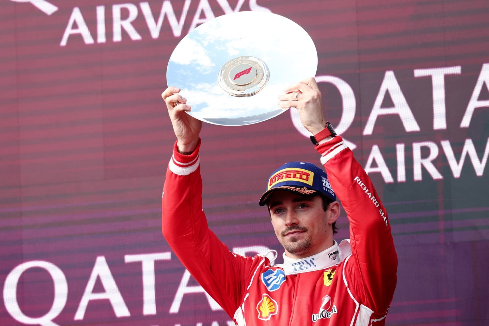
Lewis Hamilton é um piloto britânico e um dos maiores vencedores da história da Fórmula 1. Depois de muitos anos na Mercedes, Hamilton passou a competir pela Ferrari e continua na equipe durante a temporada de 2026.
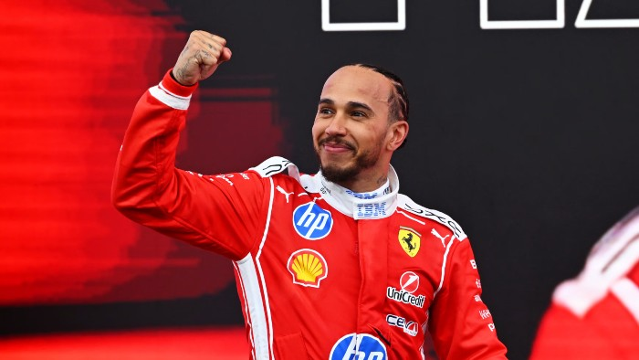
Lando Norris é um piloto britânico da McLaren. Ele chegou à Fórmula 1 em 2019 e construiu sua carreira na equipe britânica. Em 2026, continua como companheiro de equipe de Oscar Piastri.
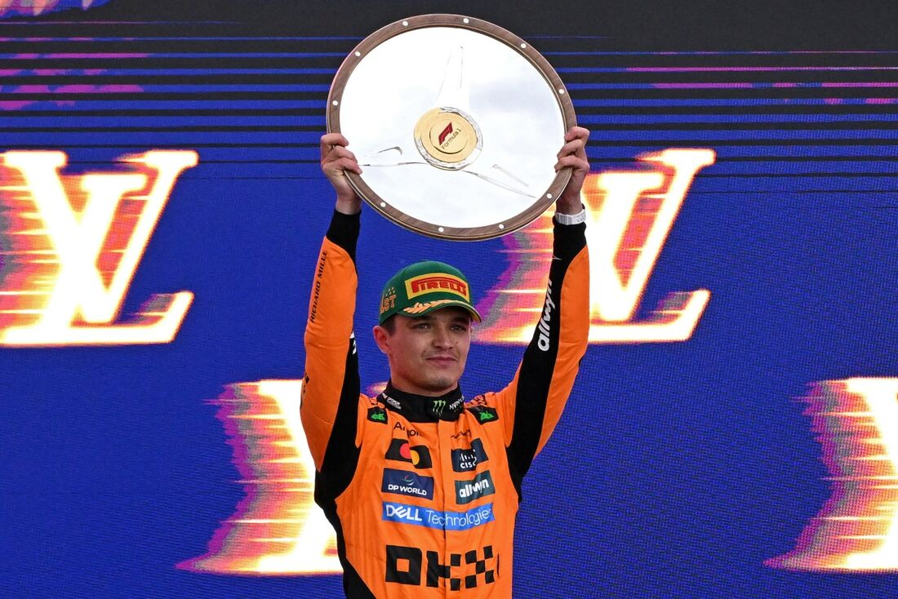
Oscar Piastri é um piloto australiano que compete pela McLaren. Ele chegou à Fórmula 1 em 2023 e rapidamente passou a disputar posições importantes no grid.
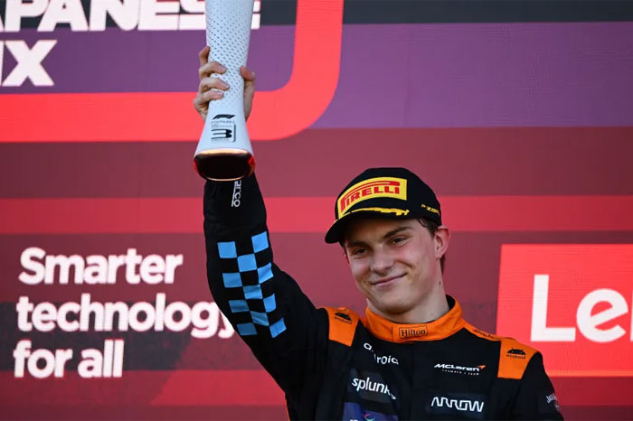
Max Verstappen é um piloto neerlandês da Red Bull Racing. Ele chegou à Fórmula 1 em 2015 e conquistou múltiplos títulos mundiais. Em 2026, continua defendendo a equipe.
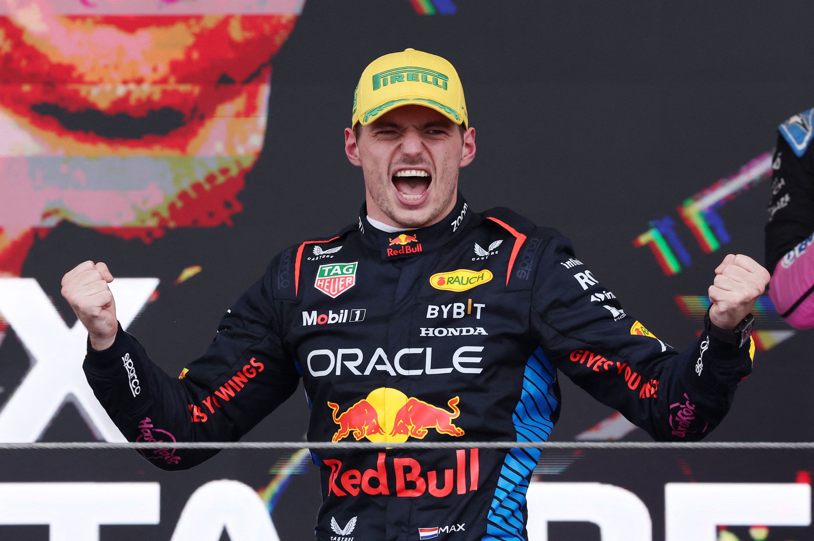
Isack Hadjar é um piloto francês que chegou à Red Bull Racing em 2026. Antes de assumir sua vaga na equipe principal, ele competiu pela Racing Bulls.
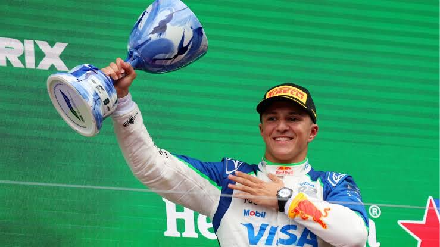
Liam Lawson é um piloto neozelandês. Em 2026, ele compete pela Racing Bulls e continua sua trajetória na Fórmula 1 depois de já ter participado de corridas pela equipe em temporadas anteriores.
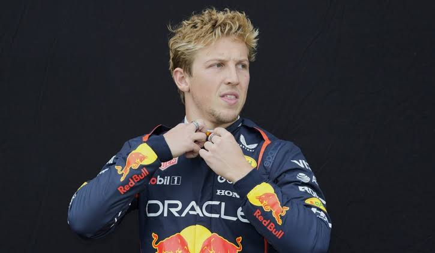
Arvid Lindblad é um jovem piloto que chegou à Fórmula 1 em 2026. Ele compete pela Racing Bulls após sua passagem pelas categorias de formação e se tornou um dos novos nomes do grid.
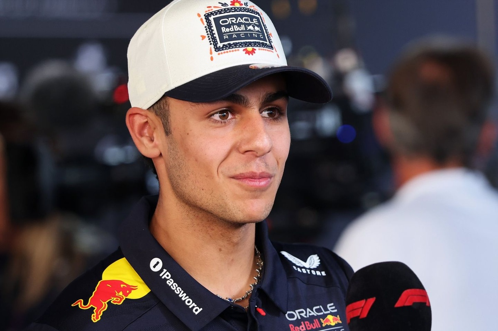
Pierre Gasly é um piloto francês da Alpine. Ele chegou à Fórmula 1 em 2017 e passou por diferentes equipes antes de se estabelecer na Alpine.
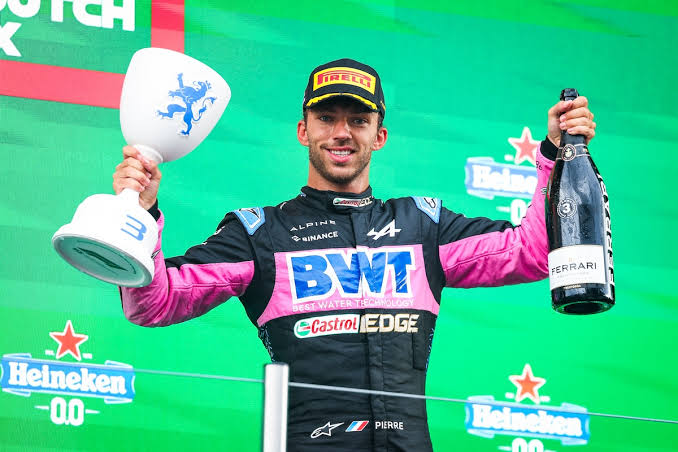
Franco Colapinto é um piloto argentino. Ele compete pela Alpine e representa a Argentina no grid da Fórmula 1.
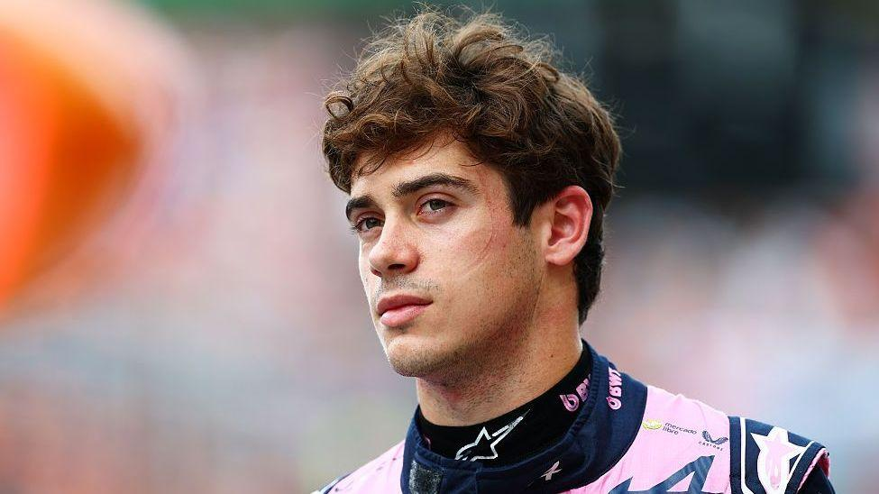
Esteban Ocon é um piloto francês. Ele possui experiência em diferentes equipes da Fórmula 1 e compete pela Haas em 2026.
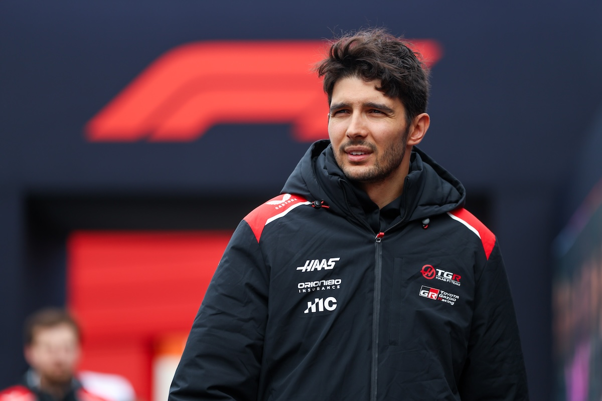
Oliver Bearman é um piloto britânico que compete pela Haas. Ele é considerado um dos jovens talentos do automobilismo e continua sua carreira na Fórmula 1 em 2026.
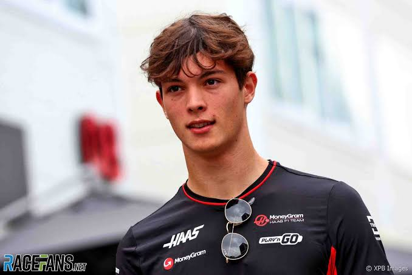
Nico Hulkenberg é um piloto alemão com longa experiência na Fórmula 1. Em 2026, ele compete pela Audi.
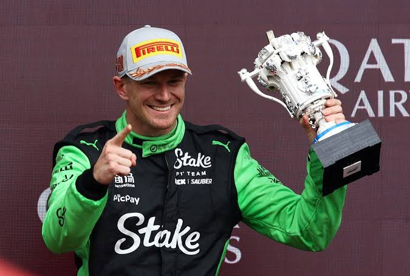
Gabriel Bortoleto é um piloto brasileiro. Depois de se destacar nas categorias de formação, chegou à Fórmula 1 e compete pela Audi em 2026.
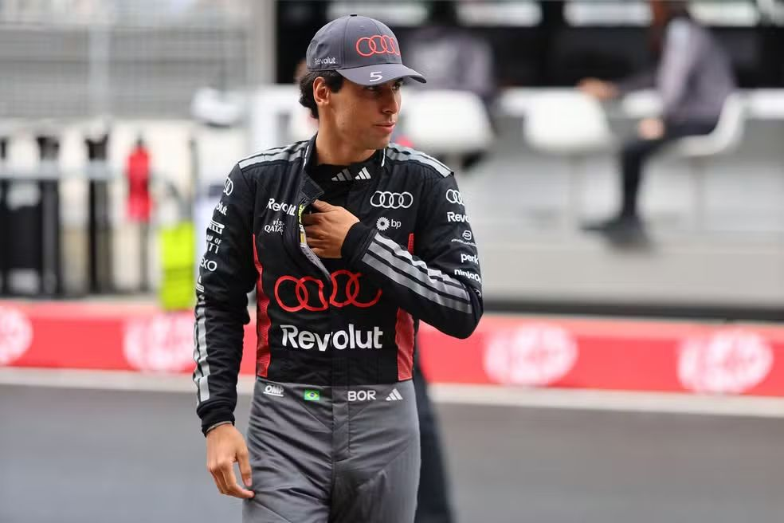
Carlos Sainz é um piloto espanhol com experiência em diversas equipes da Fórmula 1. Em 2026, continua competindo pela Williams.
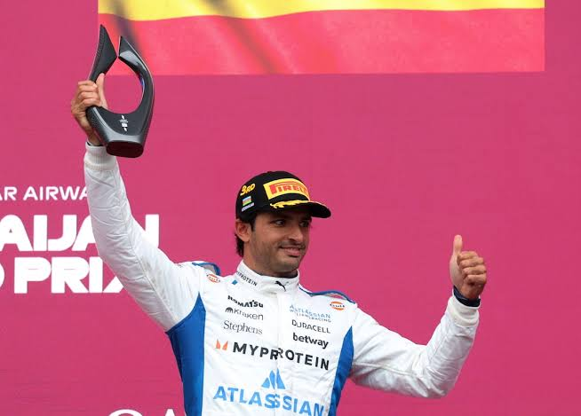
Alexander Albon é um piloto tailandês-britânico que compete pela Williams. Ele continua formando dupla com Carlos Sainz em 2026.
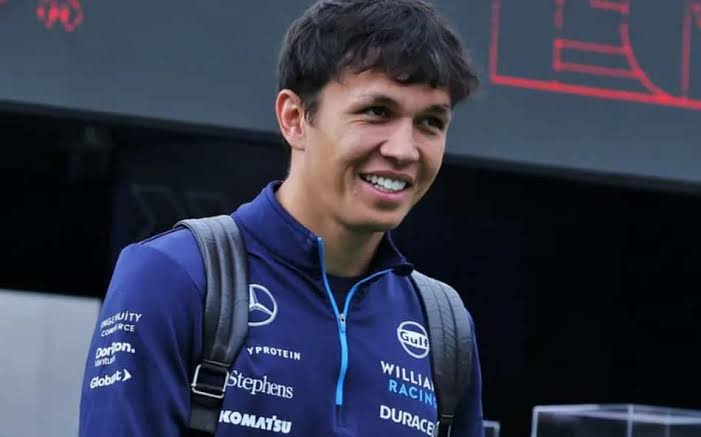
Fernando Alonso é um piloto espanhol bicampeão mundial. Ele possui uma das carreiras mais longas da Fórmula 1 e continua competindo pela Aston Martin em 2026.
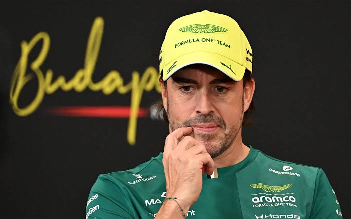
Lance Stroll é um piloto canadense que compete pela Aston Martin. Ele continua na equipe durante a temporada de 2026.
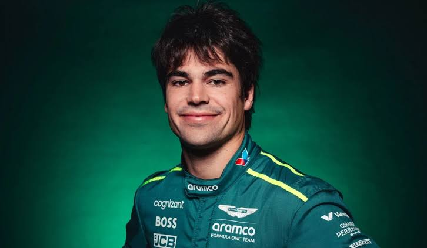
Sergio Perez é um piloto mexicano com longa experiência na Fórmula 1. Em 2026, ele retorna ao grid para competir pela Cadillac em sua primeira temporada na categoria.
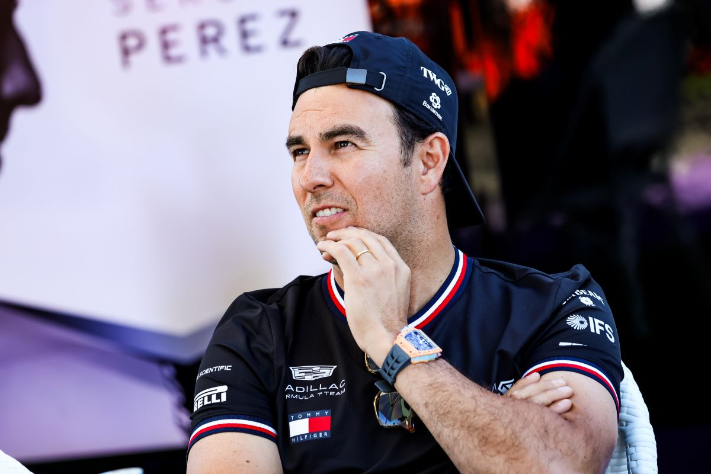
Valtteri Bottas é um piloto finlandês que possui grande experiência na Fórmula 1. Em 2026, ele retorna ao grid ao lado de Sergio Perez para formar a dupla da nova equipe Cadillac.
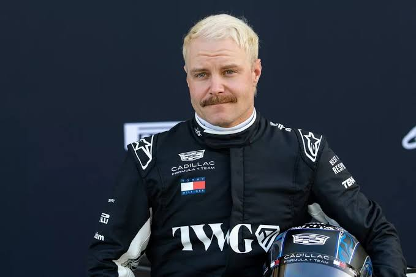